Understand AI engineering
through experiments.
From model training and retrieval to inference deployment, we use code and measurements to ask what works, under which conditions, and how to test it on your own data and hardware.
Start with a question
Explore methods alongside their data, settings, and results.
Training and fine-tuning
Prepare data, adapt embedding and reranking models, and assess them with retrieval metrics.Inference and performance
Compare quantization, serving engines, and concurrency; estimate memory and bandwidth for deployment.Retrieval and storage
Explore multi-stage retrieval and compare vector database recall, latency, and storage costs.Documents and multimodal AI
Study OCR, image fine-tuning, and cross-modal deployment across devices and their limitations.What measurements can tell us
Every result depends on its data, hardware, and method.
Check outputs as well as speed
On four OCR samples on GB10, total model generation time improved by 2.36× with identical greedy outputs. Timing excludes image loading and preprocessing; the result does not represent all documents.
Explore OCR acceleration →Build your own comparison
Models, data, and hardware affect results. Experiment records include configurations and methods to help you test your own workload.
Browse experiments →Experiment index
Choose a topic to inspect methods, code, results, and their limits. English guides are linked where available; other entries open in Chinese.
Training, fine-tuning, and retrieval
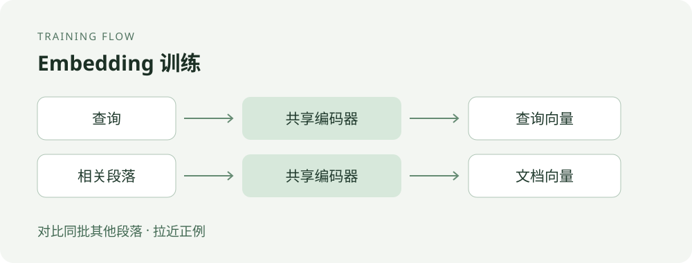
Chinese embedding fine-tuning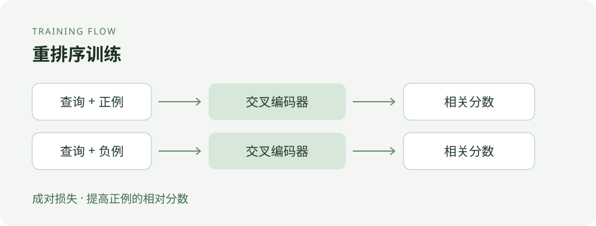
Reranker fine-tuning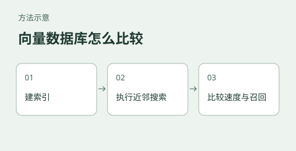
Vector database benchmark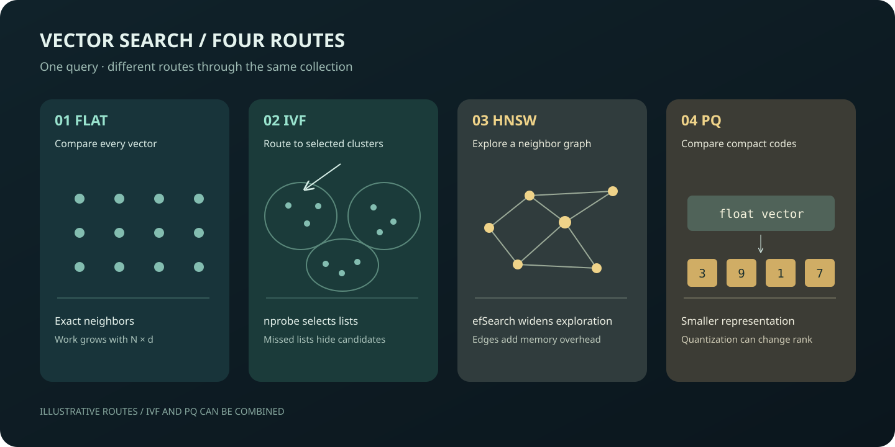
Vector index costsDistillation, multimodal AI, and fine-tuning
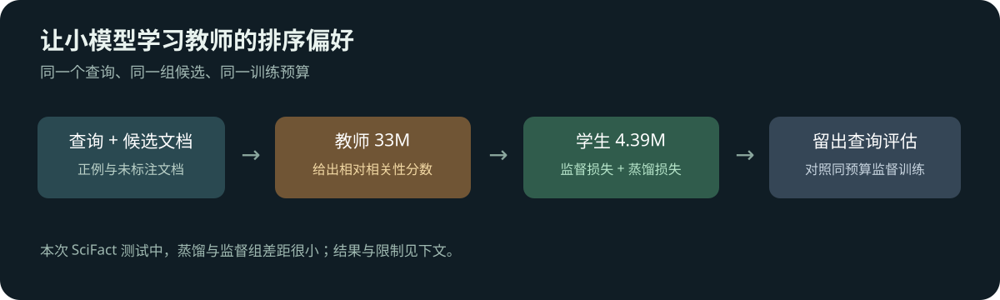
Reranker distillation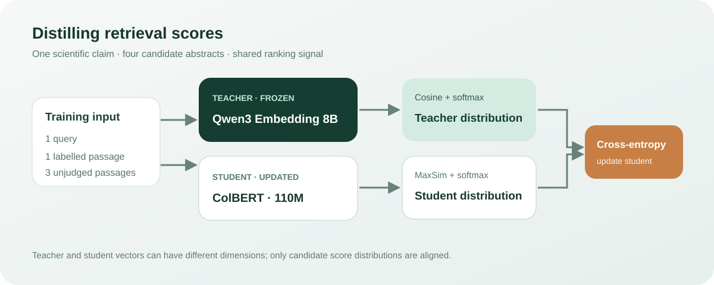
ColBERT distillation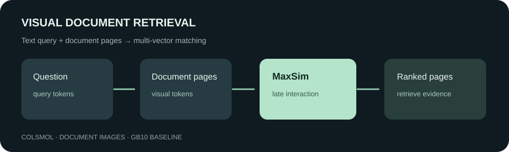
Visual multi-vector document retrieval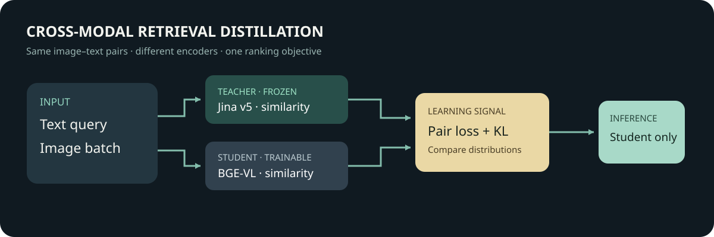
Multimodal embedding distillation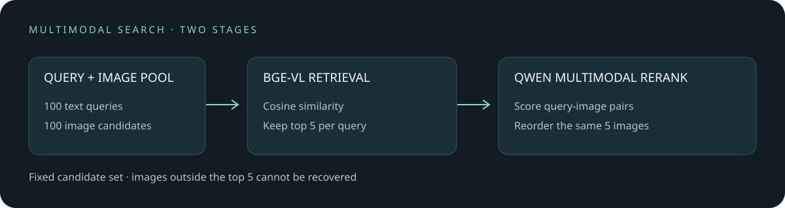
Multimodal reranking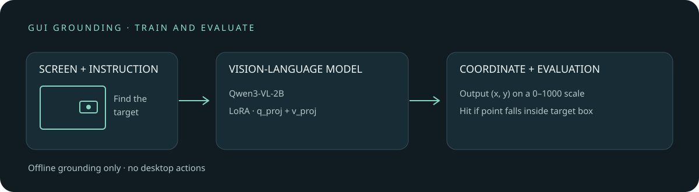
GUI grounding fine-tuning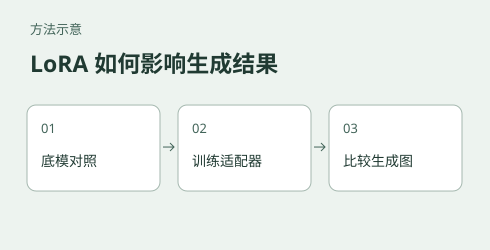
Identity image fine-tuningInference, deployment, and costs
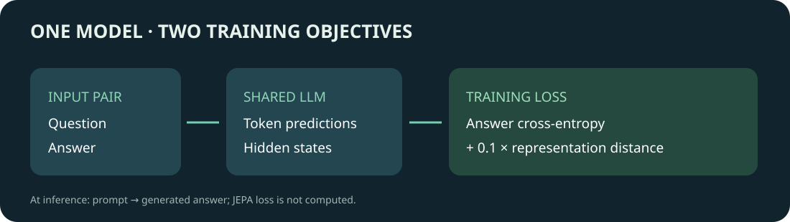
Language JEPA training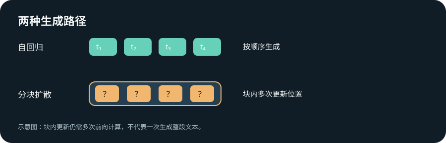
Diffusion language model speed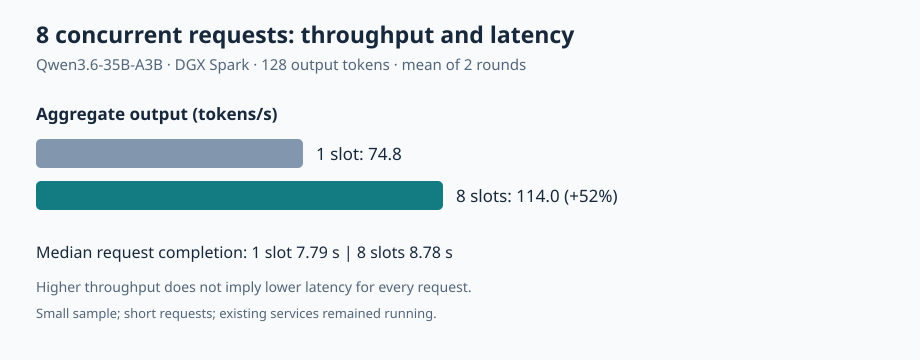
GB10 inference slots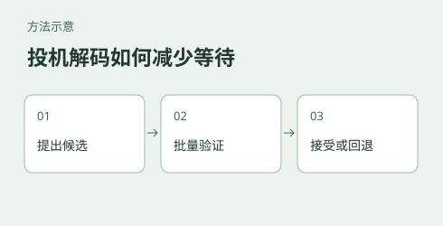
LLM inference performance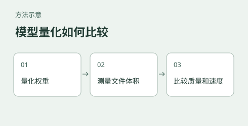
Language model quantization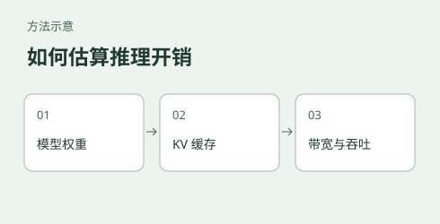
Inference cost models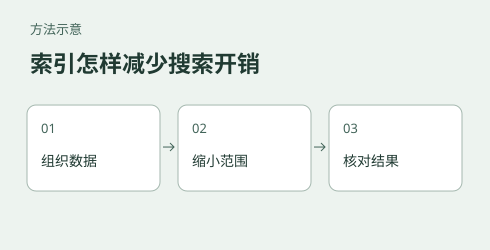
Data structure costsDocument understanding and multimodal AI
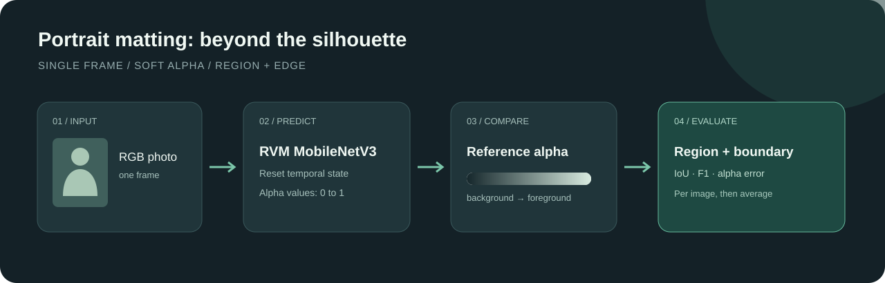
Portrait matting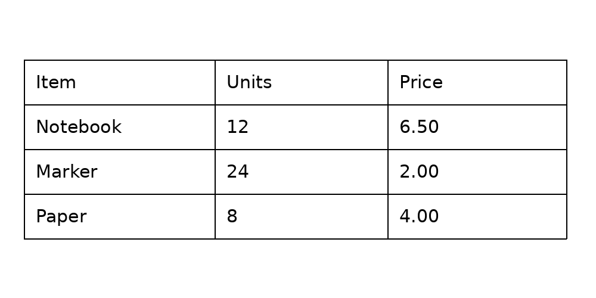
Table structure recognition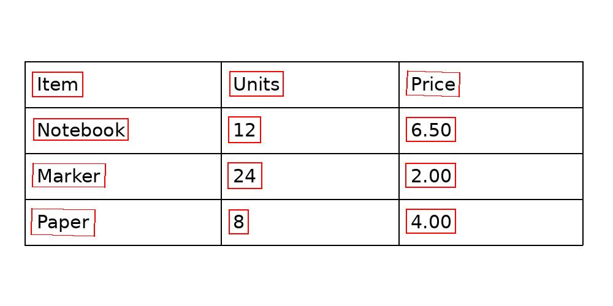
Text detection and recognition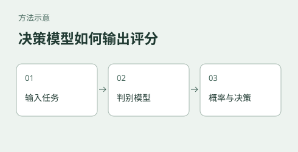
Jev open-source evaluation